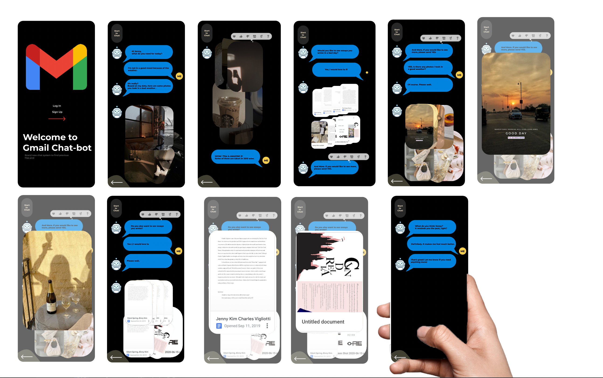

Concept
I’v always thought that internet is one of the most important method to communicate and share different kinds of thoughts with all other people around the world. If I had to choose an online space that I inhabit to call home, it would be my google drive. I’ve started to use google drive since 2010, which shows it contains countless memories and “I”s. Based on this idea, I decided to make a chat-bot, which can communicate with me to find photos and essays from the past easily, quickly.
Process
First of all,
- I used "Figma" to express my idea. It was my first time using figma but, it was good enough to follow through.
- I picked iphone frame to set up and had made icons such as, text boxes and robot faces to create my google chat-bot.
- After instering all the .pngs and .imgs, I started to type texts to look like a real chat.
- Lastly, I screenshotted few images and essays to organize so that it look like my chat bot has sent messages.

Reflection
It was really hard for me to finish this project because I am not a person who is really friendly with creating new apps or making videos. While other classmates were enjoying and expert at certain area, I was not. However, it was good chance for me to try something new and learn from others by watching their processes each week. Also, I felt like it would be great if there is a system like this google chat bot.
